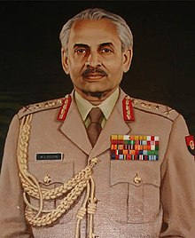

Maha Vir Chakra
The Maha Vir Chakra (MVC) (lit. great warrior medal) is the second highest military decoration in India, after the Param Vir Chakra, and is awarded for acts of conspicuous gallantry in the presence of the enemy, whether on land, at sea or in the air. It replaced the British Distinguished Service Order (DSO). The medal may be awarded posthumously.
1-
Jag Mohan Nath
Wing Commander

2-
Rajinder Singh Sparrow
Major General
3-
Arun Shridhar Vaidya
Genral
